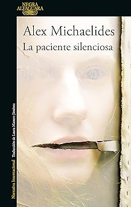

Un nuevo mundo de lo que más te guste.

RECOMENDADOS
Lista hecha por Tecnolochicas PRO


Best Sellers


Pero...,¿Qué estoy leyendo?
- La mayoría es narrativa.
- Contiene elementos sobrenaturales o inexplicables, es decir, que rompen con la realdad.
- Aparición de criaturas fantásticas.
- A menudo se dejan de lado las leyes de la física.
- Creación de una atmósfera inquietante.
- A menudo hay un factor sobrenatural.
- Cultivo del miedo y emociones asociadas.
- Suceso sorprendente, a menudo, sin explicación inmediata, relacionado con algo esencial para el ser humano.
- Creación de una atmósfera inquietante.
- A menudo hay un factor sobrenatural.
- Cultivo del miedo y emociones asociadas./li>
- Suceso sorprendente, a menudo, sin explicación inmediata, relacionado con algo esencial para el ser humano.
Manga
El manga es una forma de cómic y novela gráfica originaria de Japón. La palabra manga proviene de dos palabras japonesas: “man”, que significa “caprichoso o improvisado”, y “ga”, que se traduce como “dibujos”. El manga suele publicarse en capítulos semanales o mensuales que luego aparecen por entregas en grandes revistas de manga. Colectivamente, estos capítulos de manga se publican juntos como volúmenes tankōbon, a menudo libros de tapa blanda que se pueden comprar en librerías o tiendas de manga.Cómics
Un cómic es un relato explicado mediante viñetas o recuadros que contienen ilustraciones. Algunas o todas las viñetas pueden contener, además, un texto más o menos breve. Esta definición simple explica por qué se considera un formato tan versátil: el uso creativo que podemos darle a las viñetas, las ilustraciones, las palabras y los recursos que veremos más adelante, demuestran que es imposible agotar sus posibilidades.FANTASIA
-

La Tierra Fragmentada
La Tierra Fragmentada narra la historia de un mundo llamado la Quietud, donde se producen cataclismos periódicos llamados estaciones que amenazan con destruir la civilización. En este mundo, hay personas con el poder de controlar la tierra, los orogenes, que son temidos y odiados por el resto. Es una obra original, compleja y emocionante que explora temas como la identidad, la opresión, la resistencia y la esperanza.
Conseguir -

Asesino real
El protagonista de esta trilogía es Traspié Hidalgo Vatídico, el hijo bastardo del príncipe heredero de los Seis Ducados, un reino asediado por unos piratas que convierten a la gente en zombis. Traspié tiene dos dones mágicos: la Habilidad, que le permite comunicarse telepáticamente con otros miembros de la familia real, y el Arte del Lazo, que le permite vincularse con animales.
Conseguir -

El nombre del viento
Mendigo, ladrón, mago, músico, héroe y asesino, Kvothe es el corazón de esta saga fantástica escrita entre dos tiempos: la leyenda y la propia narración de Kvothe, en la que se está cociendo el último capítulo de su historia. Se trata en total de una trilogía, de la que de momento solo han visto la luz los dos primeros libros: El nombre del viento y El temor de un hombre sabio.
Conseguir -

Jonathan Strange y el señor Norrell
Mendigo, ladrón, mago, músico, héroe y asesino, Kvothe es el corazón de esta saga fantástica escrita entre dos tiempos: la leyenda y la propia narración de Kvothe, en la que se está cociendo el último capítulo de su historia. Se trata en total de una trilogía, de la que de momento solo han visto la luz los dos primeros libros: El nombre del viento y El temor de un hombre sabio.
Conseguir
NOVELAS
-

Cien años de soledad
La novela del escritor colombiano que narra las vicisitudes de la familia Buendía a lo largo de siete generaciones en el ficticio pueblo de Macondo es considerado por muchos la mejor novela de todos los tiempos. Referente del boom latinoamericano y abanderado del realismo mágico, esta obra, publicada en 1967, para muchos debería encabezar el ranking.
Conseguir -

El Conde de Montecristo
La clásica novela de aventuras que aparece en todas las listas. El autor de Los tres mosqueteros, escribió en 1844 esta novela que se publicó por entregas y que cuenta la historia de Edmundo Dantés, marinero que debido a una traición acaba en prisión de la que conseguirá escapar para convertise en el conde del título.
Conseguir -

Crimen y castigo
Publicada en 1866, la novela de Dostoievski es considerada una de las cumbres de la literatura rusa. El análisis psicológico que realiza del protagonista, el estudiante Rodión Raskólnikov, que se enfrenta a un dilema moral. Es capaz de justificar humanitariamente un crimen, pero que al cometerlo verá cómo lo persigue la culpa.
Conseguir -

La Divina comedia
Dividido en cánticas (Infierno, Purgatorio y Paraíso), Dante, Beatriz y Virgilio protagonizan este poema que resume los conocimientos desde la civilización clásica a la medieval, las creencias o la filosofía. Dante escribió este libro en las primeras décadas de 1300 y que ha llegado hasta nuestros días considerada como una de las obras maestras de la literatura y ha servido como referente a multitud de creadores de todas las épocas.
Conseguir
Terror
-

Dispersión
Una novela al mismo tiempo compasiva y extraña, narrada con una prosa austera e hipnótica, mucho más que una novela de terror psicológico, ya que también aborda temas como la soledad en la tercera edad, el trauma y la propia identidad.Reid nos cuenta la historia de Penny, una anciana que vive sola, sufre un accidente doméstico y cuando despierta se encuentra en la residencia Seis Cedros.
Conseguir -

Tragedia en villa Rosato
La Villa Aestas en Orvieto, fue escenario en 1974 de un verano que cambió vidas. La estrella de rock Noel Gordon alquila la villa buscando inspiración. Su invitado, el músico Pierce Sheldon, se une con su novia Mari y su hermanastra Lara, desencadenando eventos que culminan en el asesinato de Pierce. Emily investiga el pasado y sospecha que el asesinato fue más que excesos.
Conseguir -

La casa de las sombras
Catherine, tras superar un despedido injusto y el acoso en una cadena televisiva en Londres, comienza de nuevo. Le ofrecen catalogar la singular colección de muñecas y títeres antiguos de M.H. Mason, con representaciones sangrientas de la Gran Guerra. La novela explora la lucha de Catherine por enfrentar su pasado y descubrir horrores inimaginables.
Conseguir -

Mi esposa y yo compramos un rancho
Es una novela a dos voces, escrita por dos hermanos. Narra la historia de una joven pareja, Harry y Sasha, y su perro, Dash, que dejan la bulliciosa ciudad para vivir en la casa de sus sueños, situada en una de las regiones más pintorescas del estado de Wyoming. Una noche de primavera, empieza una serie de acontecimientos que les harán dudar de todo lo que hasta ahora creían conocer.
Conseguir
Académico
-

Diseño de sistemas interactivos centrados en el usuario
Esta obra se enmarca en el contexto de la disciplina conocida con el nombre de Interacción persona-ordenador (IPO), la cual está relacionada con el diseño, la evaluación y la implementación de sistemas interactivos para que sean utilizados por personas, y con el estudio de los fenómenos más importantes con los que está relacionada.
Conseguir -

Álgebra Superior
El libro está formado por cinco capítulos, en cada uno de ellos se presentan los conceptos teóricos de la manera más sencilla posible, buscando facilitar su comprensión, pero sin perder formalidad y rigor matemático. Se incluyen también una gran cantidad de ejercicios resueltos donde se explica, en forma detallada, cada uno de los pasos realizados en la resolución del problema.
Conseguir -

Matemáticas avanzadas para ingeniería
Esta séptima edición de Matemáticas avanzadas para ingeniería difiere de la edición anterior en varias medidas. Si bien respeta el orden ya clásico del volumen, esta edición hace mayor énfasis en la construcción y análisis de modelos, en la utilización de ecuaciones diferenciales ordinarias y parciales, de transformadas integrales y de funciones especiales.
Conseguir -

Chemical Engineering
Este volumen de la serie de ingeniería química de Coulson y Richardson contiene soluciones completas a los problemas de los volúmenes 2 y 3. Si bien los volúmenes principales contienen ejemplos ilustrativos elaborados a lo largo del texto, este libro y su compañero de la serie, contiene las respuestas a las preguntas más desafiantes planteadas en la sección de problemas del texto principal.
Conseguir
Ciencia Ficción
-

Fahrenheit 451
Perfecta para cerrar la trilogía de distopías clásicas junto a '1981' y 'Un mundo feliz', y una de las obras clave del genial Ray Bradbury. Presenta un futuro en el que los bomberos no apagan fuegos, sino que los generan, quemando los libros, que están prohibidos. Uno de estos bomberos se une a un grupo de resistencia que memoriza los clásicos de la literatura para evitar que se pierdan.
Conseguir -

Soy leyenda
Un clásico de altísima gradación, que aún hoy asombra por el impacto que ha tenido en la cultura popular muchas de sus ideas. Para empezar, la idea del superviviente a un apocalipsis en forma de plaga, un tropo que aquí se ve acentuado por la angustia del protagonista de desconocer por qué él ha sobrevivido.
Conseguir -

Matadero Cinco
Este clásico antibélico roza la ciencia-ficción como roza muchos otros géneros, lo que no deja de ser habitual en la inclasificable obra de Vonnegut. Seguiremos la vida de Billy Pilgrim, desde sus experiencias en la 2ª Guerra Mundial a sus viajes en el tiempo después del conflicto, con visitas al planeta Trafaldamore, donde sus habitantes ven las cuatro dimensiones.
Conseguir -
Ubik
El punto de partida de 'Ubik' es el de un técnico implicado en una enrevesada trama de espionaje corporativo y poderes psíquicos que entra en contacto con una sustancia que puede revertir las alteraciones en la realidad. Una laberíntica y progresiva pérdida de contacto con lo tangible hará preguntarse al lector qué demonios es real y cómo estar seguro de absolutamente nada.
Conseguir
Teatro
-

Casa de Muñecas
Nora se cree felizmente casada con Torvaldo. Llevan ocho años de casados y tienen tres hijos. Además, Torvaldo Helmer asumirá en el año nuevo el puesto de director de un banco. Todo parece perfecto, pero Nora guarda un secreto. Así se lo confiesa a su amiga Linde. Años atrás, su esposo estaba a punto de morir. Debía cambiar de clima, pero económicamente les era imposible pagar un viaje.
Conseguir -

Fausto
Los mejores libros jamás escritos. Nada tenía y, sin embargo, tenía lo suficiente: el afán de saber la verdad y el placer por el engaño.Este poema dramático, inspirado en una leyenda medieval, narra la historia de Fausto, sabio anciano que, en el ocaso de su existencia, establece un pacto con Mefistófeles, a quien entrega su alma a cambio dela juventud.
Conseguir -

Otelo
La historia original del moro de Venecia, de Gianbattista Giraldi Cinthio (1565), sirvió a William Shakespeare para crear Otelo, la única de sus grandes tragedias basada en una obra de ficción. Contraviniendo la imagen isabelina del moro, Shakespeare invierte los papeles de los protagonistas y otorga al moro Otelo el carácter de hombre noble y aristocrático.
Conseguir -
Una trilogía rural
Una joya. Elvira Lindo (sobre Federico)La tragedia de la pasión amorosa, las rivalidades familiares, la esterilidad, la represión sexual y la muerte son el hilo vertebrador de Bodas de sangre, Yerma y La casa de Bernarda Alba, las tres obras que conforman el ciclo por el que Federico García Lorca ha sido más celebrado como dramaturgo.
Conseguir
Misterio
-

Quien pierde paga
Quien pierde paga, una obra maestra de la intriga sobre un lector cuya obsesión por un escritor va demasiado lejos.Despierte, genio. Así comienza la fascinante nueva novela de Stephen King sobre un lector fanático. El genio es John Rothstein, un autor de culto y creador del personaje de Jimmy Gold.
Conseguir -

La desaparición de Stephanie Mailer
Así se inicia este colosal thriller que avanza en el pasado y el presente a ritmo vertiginoso, sumando tramas, personajes, sorpresas y vueltas de tuerca, sacudiendo e impulsando al lector sin freno posible hacia el inesperado e inolvidable desenlace.La noche del 30 de julio de 1994 la apacible población de Orphea, en los Hamptons, asiste a la gran apertura del festival de teatro.
Conseguir -

Los Chamanes de México
Barbara Guerrero (Pachita) nacho en 1900 en Parral y se convirtió en una de las más grandes chamanes de la historia de la humanidad. Sus capacidades curativas le permitían realizar verdaderas hazañas terapéuticas. Realizaba operaciones quirúrgicas ayudada de un cuchillo de monte y de un poder casi total sobre la materia y la energía.
Conseguir -

La paciente silenciosa
SOLO ELLA SABE LO QUE SUCEDIÓ. SOLO YO PUEDO HACERLA HABLAR. Alicia Berenson, una pintora de éxito, dispara cinco tiros en la cabeza de su marido, y no vuelve a hablar nunca más. Su negativa a emitir palabra alguna convierte una tragedia doméstica en un misterio que atrapa la imaginación de toda Inglaterra. Theo Faber, un ambicioso psicoterapeuta forense obsesionado con el caso.
Conseguir
Mangas y Cómics
-

ATAQUE A LOS TITANES
La raza humana, antaño dueña del mundo, se enfrenta a la extinción a manos de los titanes, gigantescos monstruos de inteligencia limitada que cazan y devoran personas por diversión. Los supervivientes se hacinan e intentan sobrevivir en una pequeña ciudad… pero algunos ya están hartos: ¡van a atacar!
Conseguir -

Chain Saw Man
Denji es un chico huérfano y pobre que trabaja como devil hunter junto con Pochita, el demonio perruno de la motosierra, para unos yakuza. Estos también desean el poder de los demonios y atacan a Denji y a Pochita, pero, al borde de la muerte, los dos se unen para formar a Chainsaw Man y logran salvarse. Makima, una devil hunter de Seguridad Pública, llega a la escena y recluta a Denji para que trabaje para ella.
Conseguir -

Nana
¡Un encuentro casual en un tren a Tokio envía a dos chicas llamadas Nana a un rumbo de colisión con el destino! Nana "Hachi" Komatsu espera que mudarse a Tokio le ayude a tener un comienzo limpio y dejar atrás su caprichosa vida amorosa. Nana Osaki, que llega a la ciudad al mismo tiempo, tiene planes de triunfar en el mundo del rock'n'roll.
Conseguir -
Tomo-chan is a Girl!
“¡DÉJAME UNIRME AL DOJO DE AIZAWA!” Misaki es el capitán del club de karate masculino, pero todavía no es rival para Tomo o Jun. Cuando se siente incapaz de proteger a su prometida Carol, se une al dojo familiar de Tomo para hacerse más fuerte. Mientras Misaki lucha, Tomo y Jun tienen una cita para ver los fuegos artificiales. ¿Tomo finalmente logrará que Jun la vea como una niña, o su verano terminará con un gemido?
Conseguir